Autonomous Robot Navigation
Creating and testing advanced path planning and control methods for a TurtleBot3 robot in a Gazebo simulation.
Introduction
This project focuses on creating and testing advanced path planning and control methods for a TurtleBot3 robot in a Gazebo simulation. The project has two main goals: Part A focuses on generating an optimal path using the A* algorithm with a pre-existing map. Part B focuses on real-time navigation, where the robot updates the map and adjusts its path based on sensor data to reach its target.
For Part A, the robot uses a static map to plan its path. The A* algorithm calculates a sequence of waypoints, creating a collision-free path from a start point to multiple goal points. This path is sent to the Gazebo simulation through ROS, where the TurtleBot3 robot follows the planned route. The robot's position and orientation are continuously monitored to adjust its movements. A proportional controller is used to correct any errors and keep the robot aligned with the planned path.
For Part B, the robot starts with no pre-generated map and only a goal point. It uses LIDAR to scan its environment and build a map in real time with SLAM (Simultaneous Localization and Mapping). As the robot moves, the map updates with new obstacles. The robot checks if the planned path collides with any new obstacles. If a collision is detected, the RRT algorithm recalculates a new, safe path to guide the robot toward its goal.
This second approach combines real-time mapping, obstacle detection, path planning, and feedback control. The robot processes its position, orientation, and map updates in ROS to quickly make decisions about replanning. This allows it to respond to changes like moving objects or new obstacles while staying on track.
Part A: Optimal Path Generation Using A* Algorithm
Mapping with Gmapping
The mapping process plays a foundational role in the navigation system for the TurtleBot3. To create an accurate map of the simulated environment, the teleop node is used to manually control the robot’s movement within the environment. This manual operation ensures that the robot can explore all accessible areas of the environment, enabling comprehensive map generation.
The gmapping algorithm, a widely used implementation of Simultaneous Localization and Mapping (SLAM), is utilized to construct an occupancy grid map. The gmapping process leverages LIDAR sensor data to identify free and occupied spaces in the environment, representing them as a grid of binary values. Free spaces are marked as 1 (navigable), and occupied spaces are marked as 0 (obstacles). This grid-based representation provides the necessary input for the subsequent path planning algorithm.
The mapping process requires careful control of the robot's movement to ensure sufficient coverage of the environment. For example, the robot must rotate in place at key locations to capture the surrounding area and ensure that no obstacles are missed.
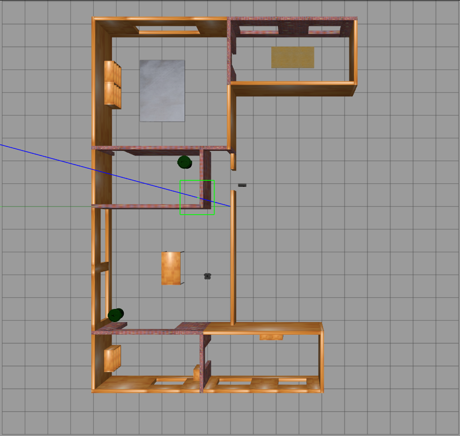
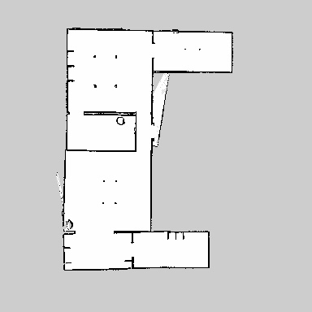
A* Algorithm Development
We developed a custom A* algorithm for navigation. In this implementation, the algorithm is optimized to handle large maps (384x384) by leveraging sparse matrix representations in MATLAB. Sparse matrixes are more memory efficient since they only need to track the values we assign.
Several heuristic functions were implemented to guide the A* algorithm, including Manhattan distance, Euclidean distance, and Chebyshev distance. These heuristics determine the cost of moving from one grid cell to another, balancing the trade-off between computational efficiency and path optimality. The algorithm dynamically calculates the g-score (cost from start to current node) and f-score (estimated total cost from start to goal).
The A* algorithm also incorporates collision checking to ensure that the planned path does not intersect with obstacles. This is achieved by evaluating the grid cells along the path and updating the trajectory if any potential conflicts are detected.
Input: Start node $x_{\text{start}}$, Goal node $x_{\text{goal}}$, Grid map $G$ Output: Path $P$ from $x_{\text{start}}$ to $x_{\text{goal}}$ Initialize: $OpenSet \gets \{x_{\text{start}}\}$ // Nodes to be evaluated $CameFrom \gets \emptyset$ // Stores the parent of each node $g(x_{\text{start}}) \gets 0$ // Cost from start to current node $f(x_{\text{start}}) \gets h(x_{\text{start}}, x_{\text{goal}})$ // Estimated cost to goal While $OpenSet$ is not empty: $x_{\text{current}} \gets \text{node in } OpenSet \text{ with lowest } f(x)$ If $x_{\text{current}} = x_{\text{goal}}$: Return $\text{ReconstructPath}(CameFrom, x_{\text{current}})$ Remove $x_{\text{current}}$ from $OpenSet$ For each $x_{\text{neighbor}}$ of $x_{\text{current}}$: $g_{\text{tentative}} \gets g(x_{\text{current}}) + \text{Cost}(x_{\text{current}}, x_{\text{neighbor}})$ If $x_{\text{neighbor}}$ not in $OpenSet$ or $g_{\text{tentative}} < g(x_{\text{neighbor}})$: $CameFrom[x_{\text{neighbor}}] \gets x_{\text{current}}$ $g(x_{\text{neighbor}}) \gets g_{\text{tentative}}$ $f(x_{\text{neighbor}}) \gets g(x_{\text{neighbor}}) + h(x_{\text{neighbor}}, x_{\text{goal}})$ If $x_{\text{neighbor}}$ not in $OpenSet$: Add $x_{\text{neighbor}}$ to $OpenSet$ Return Failure // No path found
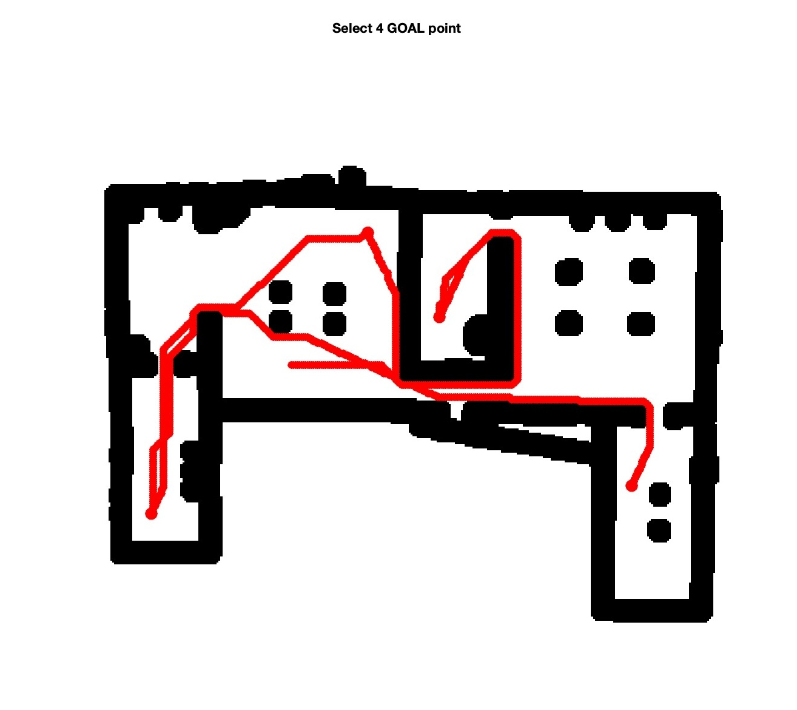
Total path cost: 255.40
Total number of nodes: 239.00
Total number of explored nodes: 14452
Total path cost: 279.30
Total number of nodes: 260.00
Total number of explored nodes: 8028
Total path cost: 212.27
Total number of nodes: 188.00
Total number of explored nodes: 8878
Total path cost: 401.38
Total number of nodes: 368.00
Total number of explored nodes: 14420
Coordinate Transformation
With the TurtleBot3, it is crucial to handle different coordinate systems effectively. We need to transform between pixel coordinates (used in A*) and world coordinates (used for robot navigation). The transformation from pixel coordinates $(u,v)$ to world coordinates $(x,y)$ is given by:
Where $(u,v)$ are pixel coordinates and $(x,y)$ are world coordinates, utilizing a scaling factor of 20 units per world coordinate (0.05 resolution) and an origin offset of (200, 184) in pixel coordinates. Conversely, the transformation from world coordinates to pixel coordinates is structured as:
The floor function ensures discrete pixel values are obtained. Following the transformation of coordinates, the system calculates the orientation angles between consecutive waypoints:
Here, $\theta_i$ represents the orientation angle at waypoint $i$, while $(x_i, y_i)$ and $(x_{i+1}, y_{i+1})$ are the consecutive waypoint coordinates. The final waypoint inherently adopts the orientation of its predecessor, and the angles are subsequently normalized to $[-\pi, \pi]$ using wrapToPi. Orientations are precisely calculated using the two-argument arctangent function to guarantee proper quadrant handling, ensuring accurate robot navigation between waypoints.
Path Planning and Feedback Control
After the A* algorithm generates the optimal path, the waypoints are transmitted to the robot in the Gazebo simulation environment. The robot sequentially follows this trajectory, moving from one waypoint to the next. However, due to dynamic factors, the robot may deviate from the planned path. To address this drift, a feedback control mechanism is implemented.
The feedback control system leverages real-time data from the robot’s sensors, specifically its position and orientation, to continuously correct deviations from the desired trajectory. The position and orientation data are obtained via subscription to the Odometry node and integrated by connecting it to the bus selector. The raw orientation quaternion must be mathematically translated into a yaw angle using the following formula:
Where $x$, $y$, $z$, and $w$ represent the outputs of the orientation signal. Waypoint tracking is then achieved using a Proportional controller, which continuously calculates the error between the robot’s current state and the target state. The controller dynamically adjusts the robot's forward velocity and steering angle to minimize this error.
Input: Current position $(x, y, \theta)$, Waypoints $A = \{(x_i, y_i, \theta_i)\}_{i=1}^N$ Output: Control inputs $(u_1, u_2)$, Completion flag Initialize counter $\text{counter} \gets 1$, $\text{flag} \gets \text{false}$ While true: Get current waypoint $(x_{\text{ref}}, y_{\text{ref}}, \theta_{\text{ref}}) \gets A[\text{counter}]$ Compute distance error: $\text{distance\_error} \gets \sqrt{(x_{\text{ref}} - x)^2 + (y_{\text{ref}} - y)^2}$ Compute heading error: $\text{error}_\theta \gets \text{atan2}(y_{\text{ref}} - y, x_{\text{ref}} - x) - \theta$ Compute linear velocity: $u_1 \gets K_x \cdot \text{distance\_error}$ Compute angular velocity: $u_2 \gets K_\theta \cdot \text{error}_\theta$ If $\text{distance\_error} < \text{threshold}$: If $\text{counter} \geq N$: $u_1 \gets 0$, $u_2 \gets 0$, $\text{flag} \gets \text{true}$ Break Else: $\text{counter} \gets \text{counter} + 1$ Return $(u_1, u_2, \text{flag})$
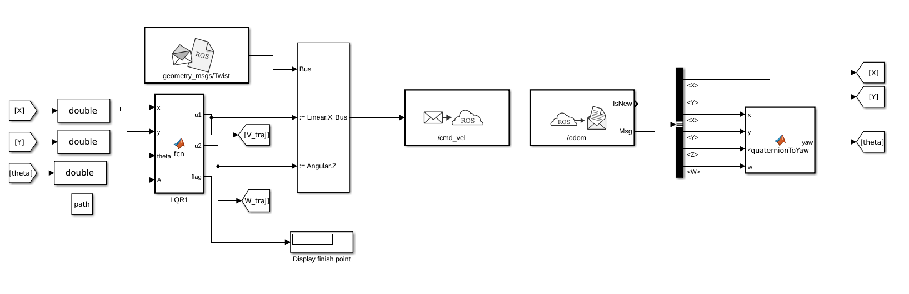
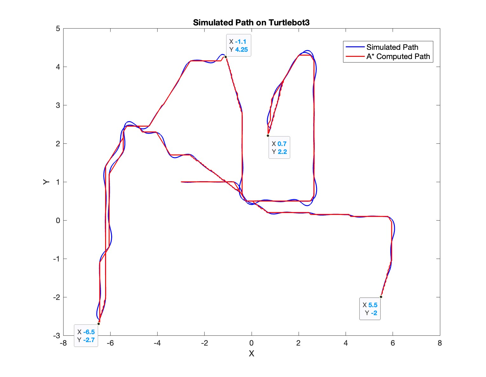
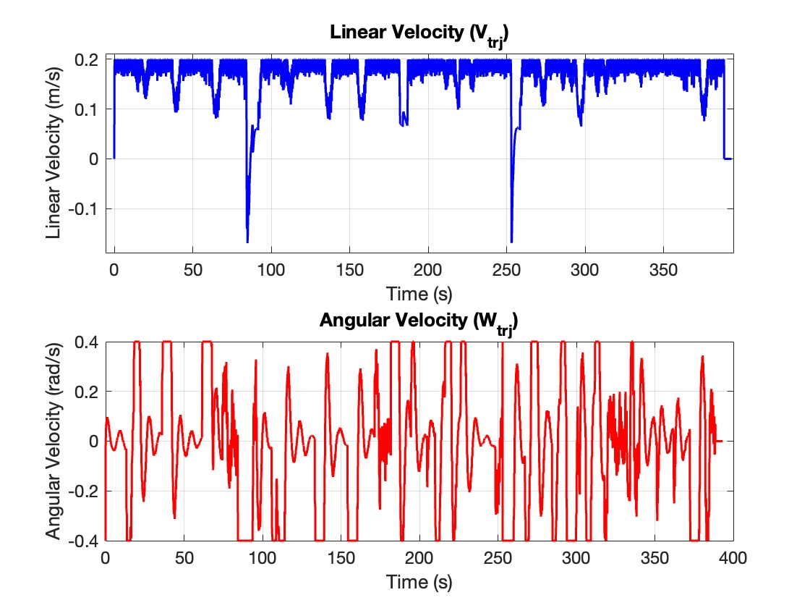
Part B: Dynamic Navigation and Real-Time Path Planning Based on LIDAR Data
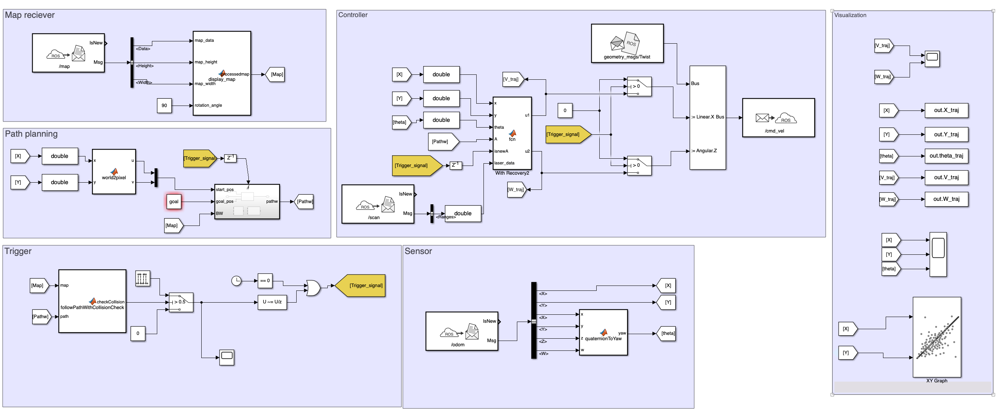
To implement the second mode of navigation, which focuses on dynamic real-time path planning and control, the system was designed in Simulink and divided into several dedicated modules. This modular architecture ensures that the robot can dynamically update its path based on real-time map data and obstacle information while maintaining robust mechanical control over its movement.
Map Receiver Module
The Map Receiver module acts as the starting point of the workflow. It subscribes to the ROS topic to receive real-time map data encompassing information about the robot's immediate surrounding environment. As the robot moves, new obstacles scanned by the LIDAR sensor are continuously appended to the map. This updated map reflects the current physical state of the environment and serves as a critical, continuously evolving input for the path planning process.
The incoming map data is preprocessed to extract the map's overall dimensions, raw data array, and resolution scaling, ensuring compatibility with the subsequent operational modules. Additionally, this module rotates the map matrix by a predefined angle to precisely align it with the robot's global coordinate frame for accurate path calculation. The fully processed map is then passed directly as input to the path planning module.
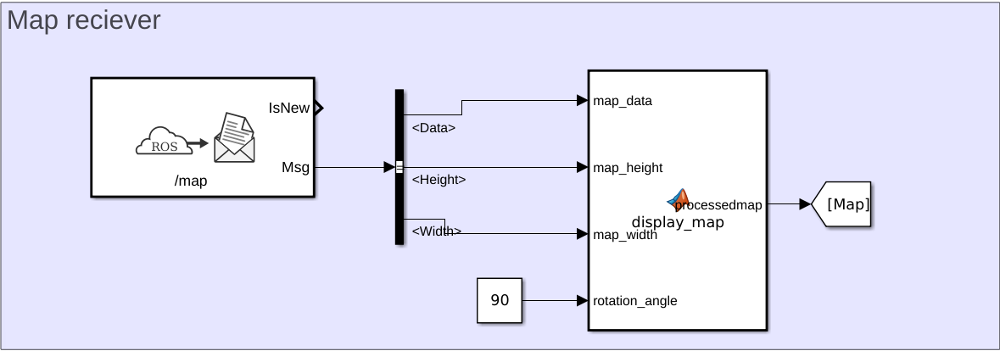
Path Planning Module
The Path Planning module computes a collision-free path bridging the robot's current position to its designated goal. It utilizes the updated occupancy map fed from the Map Receiver, alongside the start and goal spatial coordinates, as its primary inputs.
This module utilizes the Rapidly-exploring Random Tree (RRT*) algorithm to govern the path planning process. RRT* systematically explores the map, effectively avoiding obstacles while refining the selected path to minimize its overall travel cost. This efficiency makes it an optimal choice for dynamic robotic environments. The module outputs a continuously updated path, which is rigorously checked for safety tolerances before being transmitted to the Control module.
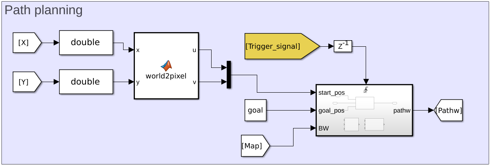
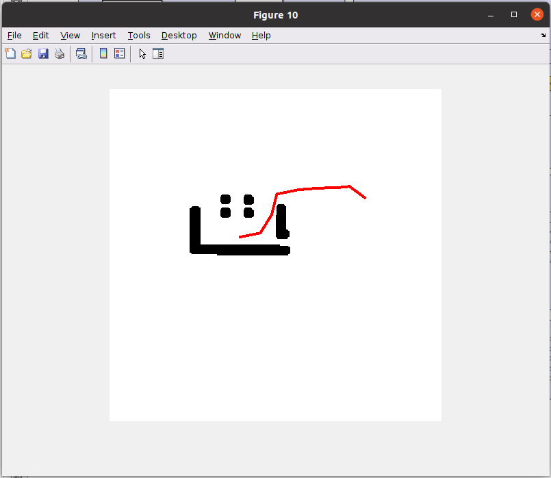
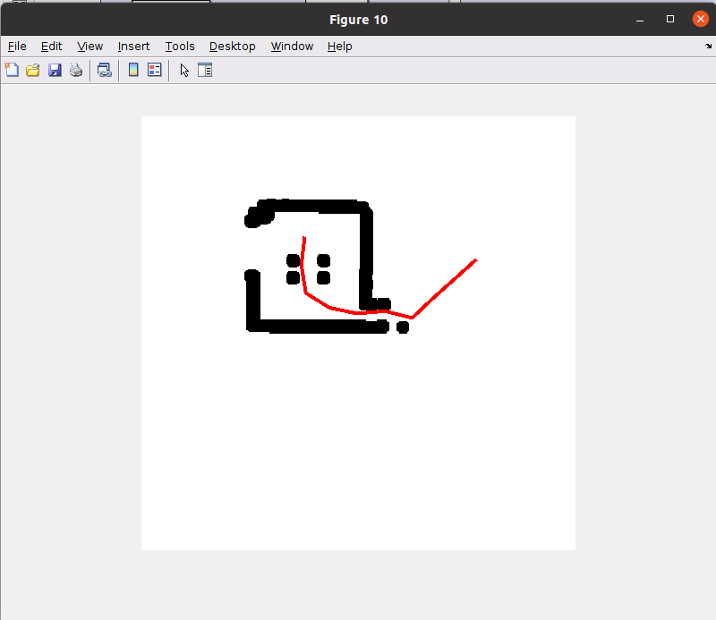
Trigger Module
The Trigger module is responsible for checking if the actively planned path overlaps with any newly detected obstacles on the updated map. It cross-references the planned trajectory with the updated map matrix; if a collision is detected, it outputs a Trigger Signal to the Path Planning module. This signal instructs the system to halt the current trajectory and compute a new, viable path. The output of the function strictly yields a logical 0 or 1. When the output evaluates to 1, a pulse generator fires a signal, and the change detector processes this transition to fully activate the trigger protocol.
This module is vital in helping the robot avoid collisions in rapidly changing environments where physical obstacles can move or manifest unexpectedly. If the path remains clear, it seamlessly passes the validated route forward to the Control module.
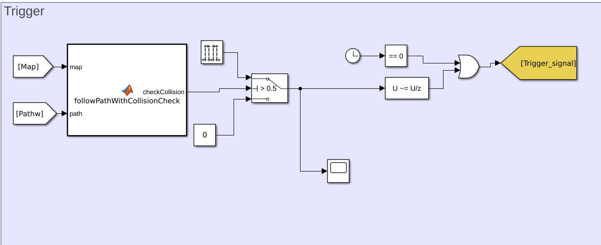
Require: Map $map$, Planned Path $path$ Ensure: Collision Flag $checkCollision$ $checkCollision \gets 0$ // Initialize collision flag to zero For $i = 1$ to $|path| - 1$: // Iterate through path segments $startPoint \gets path[i]$ $endPoint \gets path[i+1]$ $x_{\text{start}} \gets \text{world2pix}(startPoint)$ $x_{\text{end}} \gets \text{world2pix}(endPoint)$ $t \gets \text{linspace}(0, 1, 200)$ // Interpolate points between start and end $x_{\text{points}} \gets x_{\text{start}}[1] + t \cdot (x_{\text{end}}[1] - x_{\text{start}}[1])$ $y_{\text{points}} \gets x_{\text{start}}[2] + t \cdot (x_{\text{end}}[2] - x_{\text{start}}[2])$ If any $map[x_{\text{points}}, y_{\text{points}}] = 0$: $checkCollision \gets 1$ // Collision detected Return $checkCollision$ Return $checkCollision$ // No collision detected
Control Module
The Control module acts as the core operational component of the system. It processes the planned path, real-time map data, and continuous sensor readings to precisely govern the robot's physical movement. This module ensures the robot smoothly follows the path while autonomously avoiding obstacles. It utilizes several key inputs, including the robot's current coordinates defined by its $x$ and $y$ position along with its spatial orientation $\theta$, the planned trajectory provided by the Path Planning module, and laser scan data utilized to detect surrounding physical obstructions.
The control module operates dynamically across two distinct modes: normal tracking and recovery mode. In normal tracking mode, the robot systematically follows the individual waypoints derived from the planned path. The module continuously calculates the distance to the next waypoint and adjusts its speed and directional heading accordingly. It computes a linear velocity constraint to control forward and backward translation, alongside an angular velocity constraint to govern rotational turning toward the active waypoint. The algorithm inherently limits the maximum speed and acceleration to ensure mechanical stability.
If the robot becomes stuck or inadvertently collides with a physical obstacle, it immediately switches into recovery mode. In this state, the laser scan data assesses the clearance distance to obstacles present in the front, left, right, and rear sensor fields. Based on this clearance data, the robot initiates specific evasive actions; it will reverse its linear velocity if an obstacle is detected directly in front, or it will rotate left or right to seek a clear spatial trajectory. The recovery mode automatically terminates once the immediate path is evaluated as clear, allowing the robot to seamlessly revert to normal tracking.
The module calculates and updates its commands in real-time, subsequently transmitting them to the ROS command velocity topic to actuate the robot's wheel motors. It simultaneously tracks the robot's real-world position and structural velocity to facilitate continuous micro-adjustments as required by the terrain.
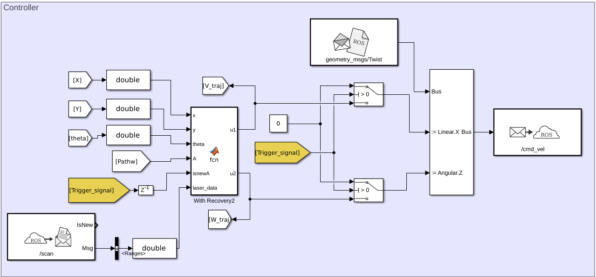
Require: Current Position $(x, y, \theta)$, Path $A$, Laser Data $laser\_data$, Trigger Signal $isnewA$ Ensure: Control Commands $(u_1, u_2)$ Initialize variables: $counter \gets 1$, $recovery\_state \gets 0$ If $A$ is empty or $isnewA$ is true: Reset $counter$ and $recovery\_state$ Obstacle Detection: Process $laser\_data$ to compute $front\_dist$, $left\_dist$, $right\_dist$ Detect obstacle: $obstacle\_detected \gets (front\_dist < MIN\_SAFE\_DIST)$ If $obstacle\_detected$ or $recovery\_state > 0$: Recovery Mode: If $recovery\_state = 0$: // Obstacle detected Start recovery: $recovery\_state \gets 1$ Else If $recovery\_state = 1$: // Backing up Set $(u_1, u_2) \gets (-max\_vel, 0)$ If timer exceeds limit or rear obstacle detected: Switch to rotate: $recovery\_state \gets 2$ Else If $recovery\_state = 2$: // Rotating Set $(u_1, u_2) \gets (0, \text{rotation direction})$ If clear path detected or timer exceeds limit: Resume normal mode: $recovery\_state \gets 0$ Else: Path Following Mode: Get next waypoint: $(x_{ref}, y_{ref}, \theta_{ref}) \gets A[counter]$ Compute position error: $error_x$, $error_y$ Compute heading error: $error_\theta \gets \text{atan2}(error_y, error_x) - \theta$ Compute control commands: $u_1 \gets K_x \cdot \text{distance\_error}, \quad u_2 \gets K_t \cdot error_\theta$ Apply speed limits: $u_1 \leq max\_vel$, $u_2 \leq max\_yaw\_rate$ If distance to waypoint $<$ threshold: Advance to next waypoint: $counter \gets counter + 1$ If $counter > |A|$: Stop: $(u_1, u_2) \gets (0, 0)$ Return $(u_1, u_2)$
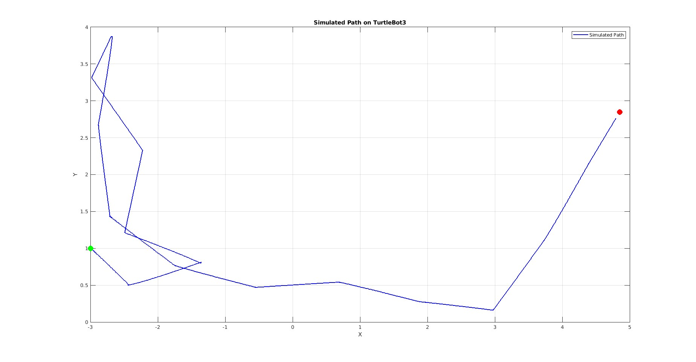

(Click here for Animation)
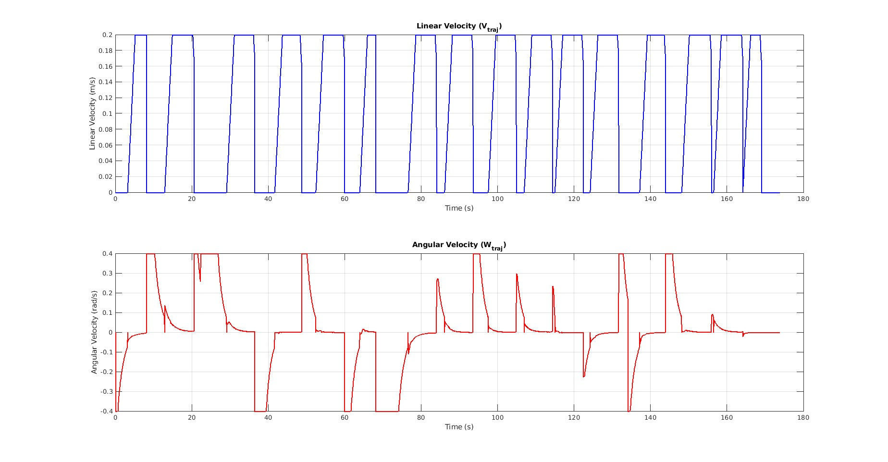
Conclusion
In this project, we implemented two distinct approaches for robot navigation: one tailored for static environments and one designed for dynamic, unknown environments. In Part A, the robot successfully utilized a pre-built static map and the A* algorithm to generate an efficient path to its goals. This method proved simple and highly reliable, as it functioned effectively with fixed maps and completely planned the trajectory ahead of time. In Part B, the robot tackled a significantly more complex task by autonomously exploring unknown areas, constructing a topological map in real-time using LIDAR sensors, and dynamically replanning safe paths with the RRT* algorithm whenever new obstacles were actively detected. This robust approach allowed the robot to successfully adapt to real-time changes in the environment, such as moving obstacles or newly discovered regions. Together, these methodologies practically demonstrate how the autonomous robot can handle both predictable and highly unpredictable situations, rendering it versatile and capable of navigating across a wide range of complex scenarios.